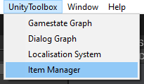
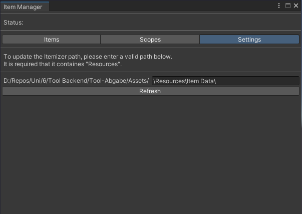
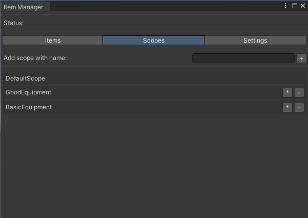
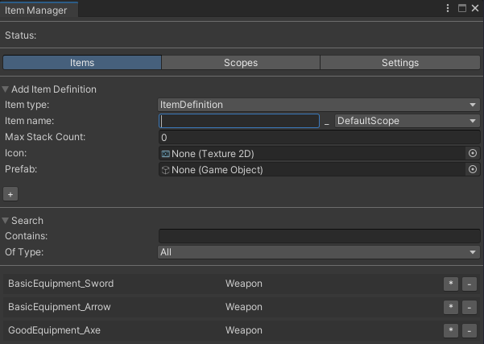
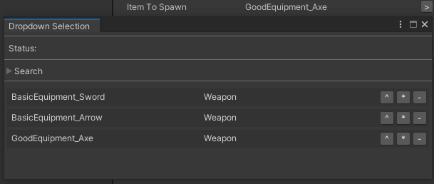
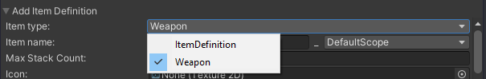
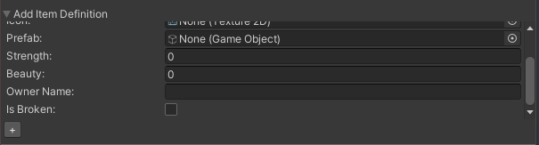

|
UnityToolbox
Brief documentation for all existing scripts.
|

|
|
UnityToolbox
Brief documentation for all existing scripts.
|
|
The ItemManager is built to ease the creation and usage of items.
There are a few prerequisites for being able to use the manager:
To use the manager, one can open the Item Manager via the menu bar "UnityToolbox" -> "Item Manager":
| Menu Bar |
|---|

|
Here you will be prompted to enter a directory, which will be used to store the required data.
This directory must be within a "Resource" folder and can be changed via the "Settings" tab:
| Settings Tab |
|---|

|
To identify different item types, scopes can be used to further categorize.
The first part of the dialog can be used to create new scopes.
The second part can be used to edit (*) and delete (-) existing scopes.
When editing, all items scope will be changed to the new value.
When deleting, all items scope will be changed to the default scope.
| Scopes Tab |
|---|

|
The dialog is split into three parts, the first where one can create new items, the second where one can search via the name and the item type and
lastly, the third where items are listed and can be edited (*) and deleted (-). As mentioned before, all assets that are used here, have to be stored within a "Resource" folder. (Icon / Prefab)
| Scopes Tab |
|---|

|
To use the items in code, simply define a ItemDefinition field, which can be accessed within the editor (public or as [SerializeField]).
The editor should now display a selection button, opening a window.
The window is similar to the item tab, displaying the search and the item list.
Apart from editing (*) and deleting (-), one can now also select an item (^).
If a selected item is deleted, an error will only be thrown at runtime.
| Selection |
|---|

|
To spawn the selected item, the ItemManager can be used. In this example we are working with the ItemToSpawn field from before:
At runtime, the item then exists as an ItemInstance.
Lastly, one can create custom items, by inheriting from ItemDefinition. The "Item Manager" window, will automatically pick up the newly created item type, making it selectable for all features.
One can now add additional int, float, string, bool fields, which can then also be filled out within the windows.
| Custom Item |
|---|

|

|
The spawned custom items are also generated as an ItemInstance. To access the additional values one can do the following: